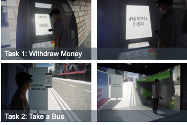

[Completed] VR 일상생활 다차원데이터를 이용한 멀티모달 딥러닝 기반 치매조기진단 디지털바이오마커 개발
연구책임자 / 2021.03.01 ~ 2024.02.29 / 과학기술정보통신부 (KRW 550 million)
VR 일상생활 다차원데이터를 이용한 멀티모달 딥러닝 기반 치매조기진단 디지털바이오마커 개발 (Developing Digital Biomarker for Early Diagnosis of Dementia in VR)기간: 2021.03. ~ 2024.02.
Funding: Ministry of Science and ICT (KRW 550 million)
치매는 비가역적 질병이기 때문에 조기진단이 매우 중요합니다. 일상생활 수행능력 평가는 치매조기진단에 가장 많이 활용되는 측정 지표입니다. 현재 임상에서는 설문지 또는 컴퓨터 기반 테스트를 통해 일상생활 수행능력을 평가합니다. 그러나 설문지는 주관적 응답으로 인해 결과가 왜곡될 가능성이 높으며, 컴퓨터 기반 테스트는 마우스, 키보드와 같은 단순한 입력 장치의 한계로 인해 생태학적으로 타당한 평가가 어렵습니다. 본 우수신진연구는 1) 가상현실 속 자연스러운 일상생활 수행을 통해 치매를 조기에 진단하는 "의료 메타버스"를 구축하고, 2) 여기서 수집된 데이터를 딥러닝 분석한 "VR 디지털 바이오마커"의 치매조기진단 성능을 검증합니다.
English Summary:
Since dementia is an irreversible disease, early diagnosis is very important. Daily living performance evaluation is the most used measure for early diagnosis of dementia. Currently, clinical practice assesses daily living performance through questionnaires or computer-based tests. However, the questionnaire is likely to distort the results due to subjective responses, and the ecologically valid evaluation of computer-based tests is difficult due to the limitations of simple input devices such as mouse and keyboard. This research project aims 1) to establish a "Medical Metaverse" that diagnoses dementia early through virtual daily living tests, and 2) to verify the early dementia diagnosis performance of "VR Digital Biomarker" that analyzes the collected data through deep learning.
